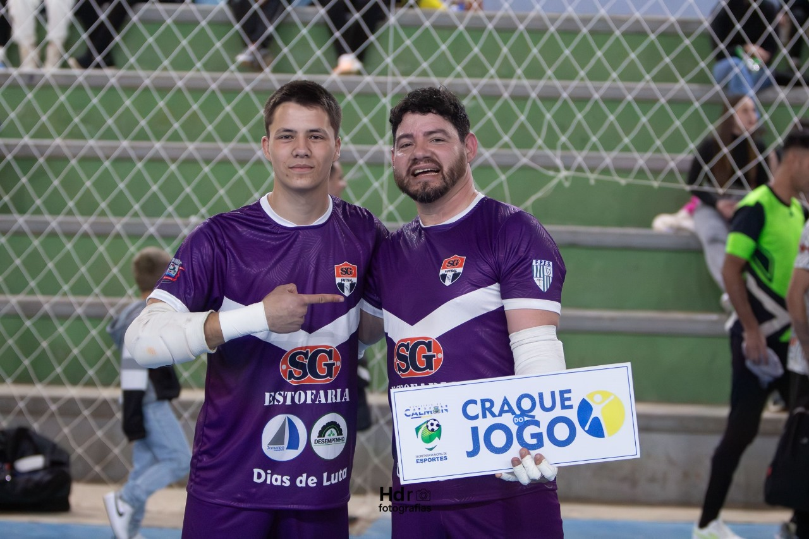
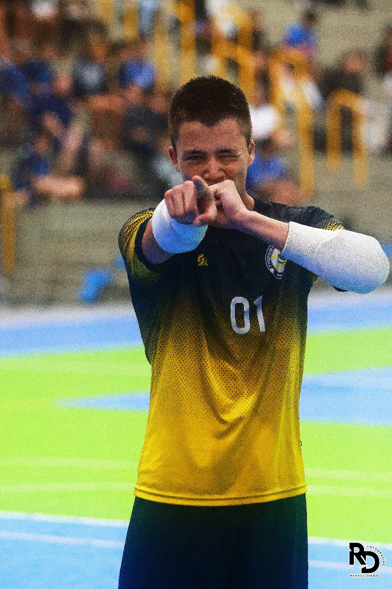

Meus projetos

Jogos Abertos Sub 18 - Joinville
Classificamos entre as 4 melhores equipes do norte representando Porto União.

Oportunidade de Ouro: Elogio de um Ex-Profissional
Oportunidade de jogar ao lado de um ex-profissional da Seleção Brasileira.

Primeiro Título de Futsal do 7° CPM
Atleta destaque e protagonista no primeiro título de futsal da história do 7° CPM.